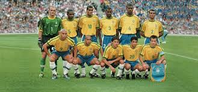
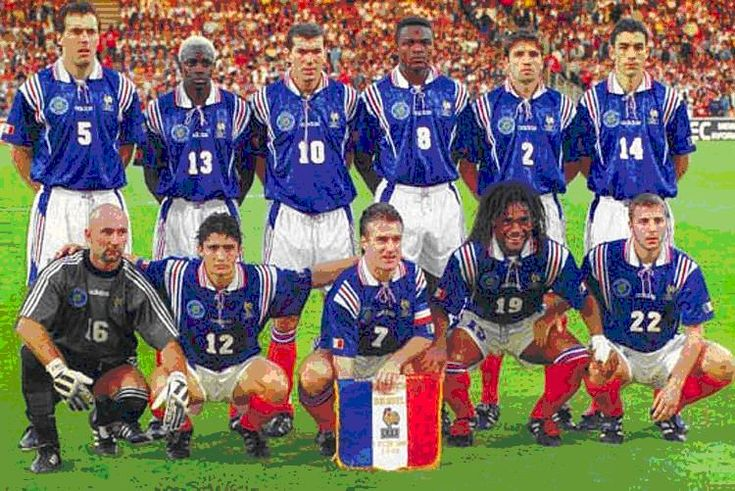

Copa do mundo de 1998


O ano de 1998 ficou marcado como a primeira vez que a Copa do Mundo passou a contar com 32 seleções. Esse formato permanece até a edição de 2022, pois em 2026 a taça será disputada por 48 países. O campeonato mundial de futebol em 1998 foi sediado na França, que conquistou o título. O Brasil chegou até a final, mas foi derrotado por 3 a 0, com dois gols do meio-campista francês Zinedine Zidane, considerado o melhor jogador do mundo pela Fifa naquele ano.